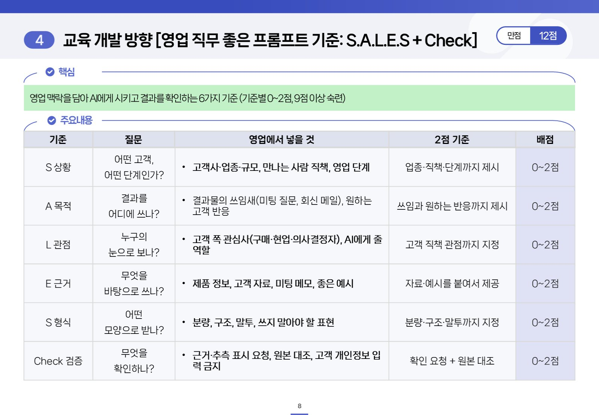
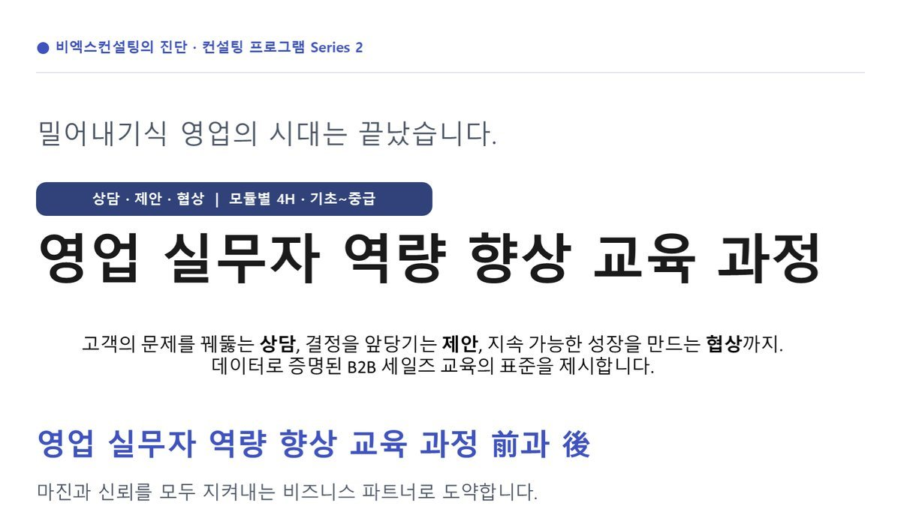
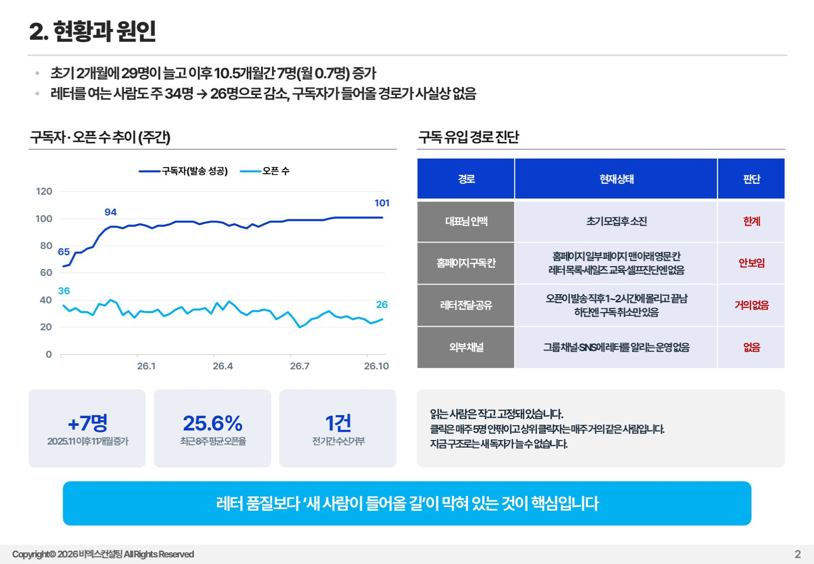
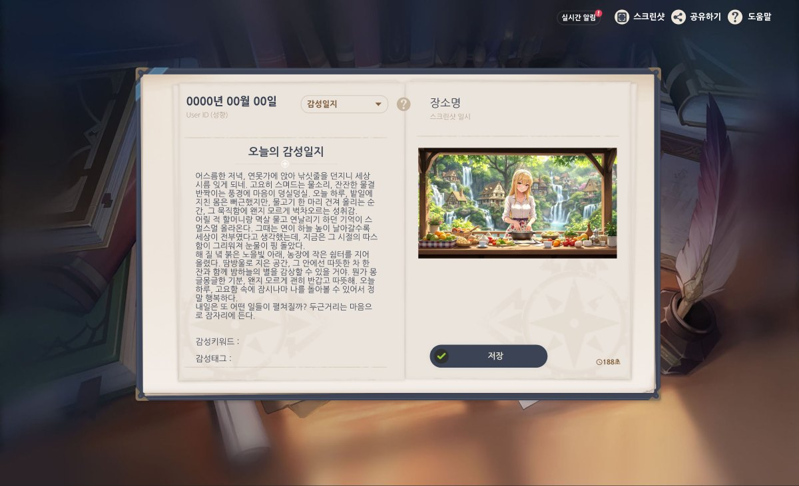

함께 일하는 사람들과
공유하고 논의하는
입문교육에서 강사마다 3~4회, 총 8~12회 리허설을 진행하며 대본과 슬라이드를 강사가 설명하기 편한 구조로 다시 구성하도록 하였습니다.
AI로 빠르게 만들고함께 다듬는,
기업교육·HRD 콘텐츠 기획·운영
AI가 만든 결과물은 제 기준에 맞춰 검토하고 방향을 조율하며, 함께 일하는 구성원과 내용을 공유하고 논의하는 과정을 중요하게 생각하고 업무에 임합니다.
입문교육에서 강사마다 3~4회, 총 8~12회 리허설을 진행하며 대본과 슬라이드를 강사가 설명하기 편한 구조로 다시 구성하도록 하였습니다.
브로셔 검수 스킬에서 잡을 오류와 제외할 항목을 기준 문서로 정하고, 결과 PPT는 매번 직접 열어 확인한 뒤 전달하였습니다.
AI 비서 과정은 다시 실행하여도 비슷한 품질이 나오는지를 평가 기준에 두었고, 홈페이지 시안은 벤치마크를 바꿔 두 차례 제작한 뒤 장점을 합쳐 C안으로 정리하였습니다.


 한살림 온라인 입문교육분화 후 첫 입문교육 기획·운영자체 교육으로 전환 → 강사진 리허설 → 온라인 운영입문교육내부강사온라인교육
한살림
나만의 AI 비서 만들기 교육과정8시간 실습형 과정 단독 설계 · 양성과정 개인 과제진단 → 설계 → 구현 → 테스트 → 운영교육과정설계AI교육평가설계
양성과정
한살림 온라인 입문교육분화 후 첫 입문교육 기획·운영자체 교육으로 전환 → 강사진 리허설 → 온라인 운영입문교육내부강사온라인교육
한살림
나만의 AI 비서 만들기 교육과정8시간 실습형 과정 단독 설계 · 양성과정 개인 과제진단 → 설계 → 구현 → 테스트 → 운영교육과정설계AI교육평가설계
양성과정
 KHIDI 신입사원 입문교육 제안RFP 기반 입문교육 제안서 팀 실습 · 콘셉트, 모듈 배치, 체험 활동 설계RFP 분석 → 콘셉트와 모듈 배치 → 교안과 슬라이드 → 제안서커리큘럼설계RFP분석체험형활동
양성과정
KHIDI 신입사원 입문교육 제안RFP 기반 입문교육 제안서 팀 실습 · 콘셉트, 모듈 배치, 체험 활동 설계RFP 분석 → 콘셉트와 모듈 배치 → 교안과 슬라이드 → 제안서커리큘럼설계RFP분석체험형활동
양성과정

영업직 신입 AI 활용 실무 과정 제안RFP 없이 가정한 과정의 제안서 · 좋은 프롬프트 기준 S.A.L.E.S + Check와 퀘스트온 평가 체험대상 설정 → 기준 정의 → 평가 체험 → 한계 확인 → 제안서교육과정설계평가설계AI교육 엑스퍼트컨설팅 AI 업무 구조화 15분 강의하네스 엔지니어링을 HRD 사례로 설명한 마이크로러닝 직접 설계와 진행기획 → 콘텐츠 → 검수 → 사람 피드백마이크로러닝강의진행라이브시연
양성과정
비엑스컨설팅 홈페이지 시안 작업홈 개편 시안, 산업별 솔루션 페이지 9개, CRM 체험 페이지 제작홈페이지 읽기 → 방향 합의 → 시안 제작 → 점검·수정 → 운영 사이트 대조홈페이지기획모션기획교육페이지기획
엑스퍼트컨설팅
AI 업무 구조화 15분 강의하네스 엔지니어링을 HRD 사례로 설명한 마이크로러닝 직접 설계와 진행기획 → 콘텐츠 → 검수 → 사람 피드백마이크로러닝강의진행라이브시연
양성과정
비엑스컨설팅 홈페이지 시안 작업홈 개편 시안, 산업별 솔루션 페이지 9개, CRM 체험 페이지 제작홈페이지 읽기 → 방향 합의 → 시안 제작 → 점검·수정 → 운영 사이트 대조홈페이지기획모션기획교육페이지기획
엑스퍼트컨설팅

교육 과정 EDM 기획제안서를 바탕으로 한 세일즈 교육 과정 EDM 기획안 3건, 담당자 인계제안서 → EDM 내용 기획 → 같은 포맷 유지 → 담당자 인계EDM기획카피구성교육상품소개 엑스퍼트컨설팅
레터 구독자 확대 전략정체된 구독자의 원인을 구독 접점 부족으로 진단하고 EDM 하단에 질문형 레터 연결 영역 제작데이터 정리 → 유입 경로 진단 → EDM 하단 연결 영역 → 담당자 인계데이터진단채널전략뉴스레터 엑스퍼트컨설팅 창호 홍보 숏츠 기획·제작창호 업체 홍보 숏츠의 콘셉트, 스토리보드, 제작콘셉트 → 사계절 스토리보드 → 생성 → 편집·마감숏폼기획후킹설계AI영상
엑스퍼트컨설팅
창호 홍보 숏츠 기획·제작창호 업체 홍보 숏츠의 콘셉트, 스토리보드, 제작콘셉트 → 사계절 스토리보드 → 생성 → 편집·마감숏폼기획후킹설계AI영상
엑스퍼트컨설팅

이세계 휴식일지힐링 농장 게임 · 시나리오·퀘스트·아이템 기획과 6인 융합팀 총괄 PM · 융합 우수상시나리오·퀘스트 기획 → 화면 설계 → 일정 관리 → QA게임기획퀘스트설계융합팀PM 2025.04 ~ 06 컨퍼런스 발표자료 취합·검수강의장 5곳의 발표자료 786장 취합·검수, 강의장별 USB 패키지 구성, 인쇄물 검수 스킬 제작자료 취합 → 검수 → 강의장별 USB 패키지 → 현장 리허설교육운영검수기준AI스킬
엑스퍼트컨설팅
컨퍼런스 발표자료 취합·검수강의장 5곳의 발표자료 786장 취합·검수, 강의장별 USB 패키지 구성, 인쇄물 검수 스킬 제작자료 취합 → 검수 → 강의장별 USB 패키지 → 현장 리허설교육운영검수기준AI스킬
엑스퍼트컨설팅
강의 슬라이드, 설명자료 제작과 온라인 교육 운영에 사용하였습니다.
창호 홍보 숏츠 영상과 이 포트폴리오를 제작하는 데 사용하였습니다.
교안 초안 작성, 자료 조사, 검수 스킬 제작에 사용하였습니다.
교육 콘텐츠와 콘텐츠 기획·제작 업무에서 함께할 기회가 있다면 연락 주시기 바랍니다.